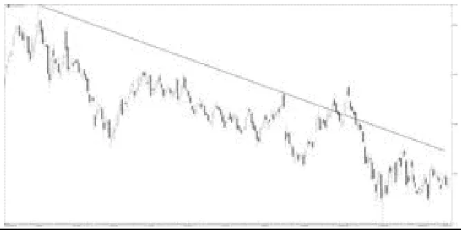
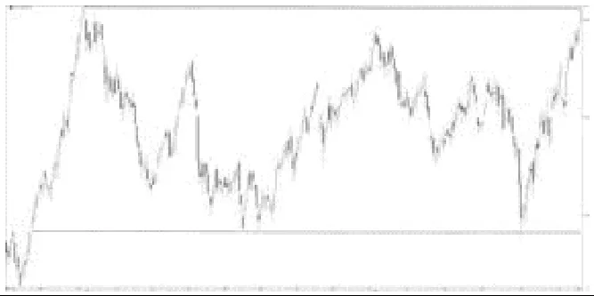

跳到教程正文
跳到教程正文从零开始的阅读教程 · 入门
趋势线与通道
用斜线连接同方向的重要低点或高点，帮助看价格有没有沿着一个坡走；平行线围起来就是通道。
趋势线与通道 — 在图上把它标出来
构造的示意数据：为了把概念画清楚而专门生成，不是任何真实市场的历史，也不证明方法有效。标注由图中实际数值计算得出。
趋势线只需两个点就能画：连接低点1（101.24）和低点2（104.03），斜率是每根 0.279 美元。低点3落在线附近，算第一次“验证”。通道线平行地穿过两低点之间的高点。第44根收盘跌到线下，说明价格不再沿这条坡走，但不代表下跌趋势已开始。
停一下：先自己想，再看答案
如果改用低点1和低点3来画，趋势线会更陡还是更平？
低点1到3的斜率是每根 0.297，比原来更陡（原来 0.279）。选点不同，线就不同，所以画线前要先说明用的是哪几个点。
示意图只帮助辨认位置与定义；真实图表更杂乱，同一段走势常有多种画法。
第一次看交易图？先认识这些词
- K线、蜡烛图是什么？
- 一根像蜡烛的小图形，记录一段时间的开盘价、最高价、最低价和收盘价。选择“1天”，一根就是一天；选择“1小时”，一根就是一小时。
- “周期/长度14”是什么意思？
- 通常是用最近14根K线来计算，不一定是14天。在1小时图上，就是最近14根一小时K线。
- 主图、副图在哪？
- 主图是显示价格的大图。副图是下面单独的一小块图，数字的单位可能和价格完全不同，不能直接比大小。
- “信号”是什么意思？
- 只是一个值得留意的现象，例如两条线交叉了；不是保证涨跌，也不会因为你添加指标就自动下单。
- 趋势、动量、波动，有什么不同？
- 趋势看一段时间的大方向；动量看涨跌推进得快不快、有多用力；波动看价格折腾的幅度有多大。跌得很快可以是下跌动量强，绝不是只有上涨才叫强。
- 交叉、背离、确认是什么意思？
- 交叉是两条线穿过彼此；背离是价格和指标没有一起走出同样的新高或新低；确认通常是等这根K线结束或等后面几根走完，才能把现象认定下来。指标的标记画在过去，不代表当时就能看见。
把它想成生活里的东西
把登山路两侧画出来，看看人还在路里，还是走出了路边。
举个例子（虚构数字，只为讲解）
仅作示例：低点100、105、110逐步抬高，连接这些低点可以描述上升斜坡。
是谁提出或推广的？
通用图表分析；单一创始人未确认 / Generic chart-analysis concept
趋势线与平行通道没有已核实的唯一最早提出者；不能把所有画法归于某位现代教师。
提出者、推广者和第一个实际使用的人是三回事。这里按可追溯资料写明，不把后来的推广者一律说成最早创始人。
打开后，按这几步看
- 选同一周期，找两个清楚的低点画上升线，或两个高点画下降线。
- 第三次靠近时观察反应，不随意穿过大量K线来凑。
- 用平行通道工具把另一边拖到明显高点或低点。
- 价格离开通道后先观察是否回到通道，避免把一根影线当反转。
最容易看错的地方
缩放与对数/线性坐标会影响视觉角度；斜率陡不等于涨势一定更可靠。
手把手找按钮：TradingView 与 AICoin
以下按电脑网页版编写，依据 2026-10-19 查阅的官方帮助。手机App的入口位置可能不同，部分功能还受账号权限和数据源限制。
这是绘图方法、分析框架或市场数据工具，不一定有一个“添加指标”按钮。按下面的条目说明找工具或数据；不要把理论体系当成一条自动计算的线。
照着做一遍：具体练习顺序
- 左侧选 Trend Line，在同一周期两个明确的低点间各点一次；下降线则连接高点。需要通道时选 Parallel Channel 并确定另一侧边界。
- 先写下选点规则，再看后续价格是否偏离；一次穿线只是现象，先检查收盘与后续变化。
在 AICoin 上，先看下面本条目的支持说明，再使用当前版本实际提供的画线或数据工具。没有同名功能时按已支持的平台或文字例子练习，不把搜索词当成平台一定有这个按钮。
TradingView
本条目搜索词：Trend Line / Parallel Channel
左侧绘图工具；趋势线两点，平行通道需要设置另一侧宽度。
按上方本条目的工具或数据入口说明操作；没有确认支持时，不要假定有一键指标。先按本页前面的阅读步骤练习。
打开 TradingView 图表 ↗官方按钮位置说明AICoin
本条目搜索词：趋势线 / 平行通道
到画线工具查找；具体名称与通道工具支持依当前版本。
按上方本条目的工具或数据入口说明操作；没有确认支持时，不要假定有一键指标。先按本页前面的阅读步骤练习。
打开 AICoin 图表 ↗官方图表操作说明该语言的视频教学
文字教程是本站整理；视频仍保留原来源，视频标题中的收益或胜率宣传不代表已验证。
书中讲解：欢迎来到真实的股市
出处：David Trullás《欢迎来到真实的股市》中文版 · 6. 趋势
西语原版：Bienvenidos al mundo real de la bolsa（Plataforma Editorial，2015，ISBN 9788416429103）
6. 趋势展开阅读 · 约 1000 字
「我们应当做的，是去寻找运动。不要与趋势争辩，尤其不要试图与之对抗。」
J. 利弗莫尔（J. LIVERMORE）
技术分析起源于道氏理论，诞生于 19 世纪末，尽管该理论直到 1903 年、即道氏去世一年后才得以发表，因为他从未就自己的理论著书立说。
本书无意展开这一理论（那会占用大量篇幅），但我们必须理解如何识别趋势，因为我们将依趋势的方向决定操作。
道氏从时间框架与价格运行两个维度来定义趋势。
按时间划分的趋势
主要趋势 ⇨ 持续时间至少一年或更久。
这是最根本的、背景性的主导趋势，我们所要学习的就是顺应它操作。我们永远顺着主要趋势方向操作，当标的进入主要趋势的修正阶段时，则离场观望。
次要趋势（或中间趋势） ⇨ 三周至三个月。
这类趋势是主要趋势的修正阶段，通常会回撤先前涨幅（顺应主要趋势方向）的三分之一到三分之二。
短暂趋势 ⇨ 短于三周。
它们是次要趋势内部的波动。
按价格划分的趋势
上升趋势 ⇨ 依次抬高的高点与低点。
请看图4中的 S&P500 指数，连接逐步抬高的低点的上升趋势线被短暂向下击穿，但并未改变主要趋势，这一点我们将在后续章节借助技术指标加以认识。
下降趋势 ⇨ 依次降低的高点与低点。
从图5中 ArcelorMittal 的案例可见，连接逐步降低的高点的下降趋势线同样会被击穿，但这并不足以改变趋势。我们将研究相关指标，帮助我们判断趋势是否会改变。

横向趋势 ⇨ 价格在一个区间内波动，既不创出新高也不创出新低；它被困在其中，朝哪个方向都迈不开步子。
横向趋势枯燥又磨人，如图6中 Telefónica 的走势，既起不来也跌不下。在其中的操作颇为棘手，因为它既不会走、也不让走。我们将摒弃所有这类标的，因为我们只想要处于上升或下降趋势中的标的；价格涨或跌我们都无所谓，但我们希望它在动、能明确朝某个方向演进。

刚接触市场的人，常常会显现出一种急于操作的焦虑——急于开仓、早早平仓，以求当天落袋，又或即便小亏也要平仓。放轻松！市场始终在那里；总有些日子，出于个人或工作上的种种原因，你们无法盯盘。
这并不意味着从今往后你们就要成为百分百的市场职业玩家。目标是理解市场、看清它的处境。
不要一大早就像枪手那样报名上场，也不要见什么动就打什么，因为就算起初你们手风顺，所有人、无一例外，最终都会倒在枪战里。
请深思下面这句话——出自一位优秀的交易者 David Stendahl，他在市场操作已超过三十年：「在趋势市中交易是枯燥的，但钱就在那里。」
「图N」为原书插图编号，插图放在第一次提到它的段落之后；书中观点与例子属于作者，本站读图课另有独立说明，二者不代表买卖建议。
核对资料与延伸阅读
- David Trullás《欢迎来到真实的股市》中文版（6. 趋势）· 西语原版：Bienvenidos al mundo real de la bolsa（Plataforma Editorial，2015，ISBN 9788416429103）
- TradingView: Drawing tools available
- Publisher: Technical Analysis of Stock Trends
整理与核对：2026-10-19。例子用于帮助读懂图表，不代表买卖建议。